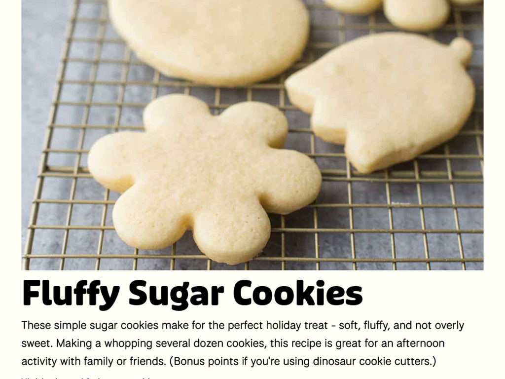
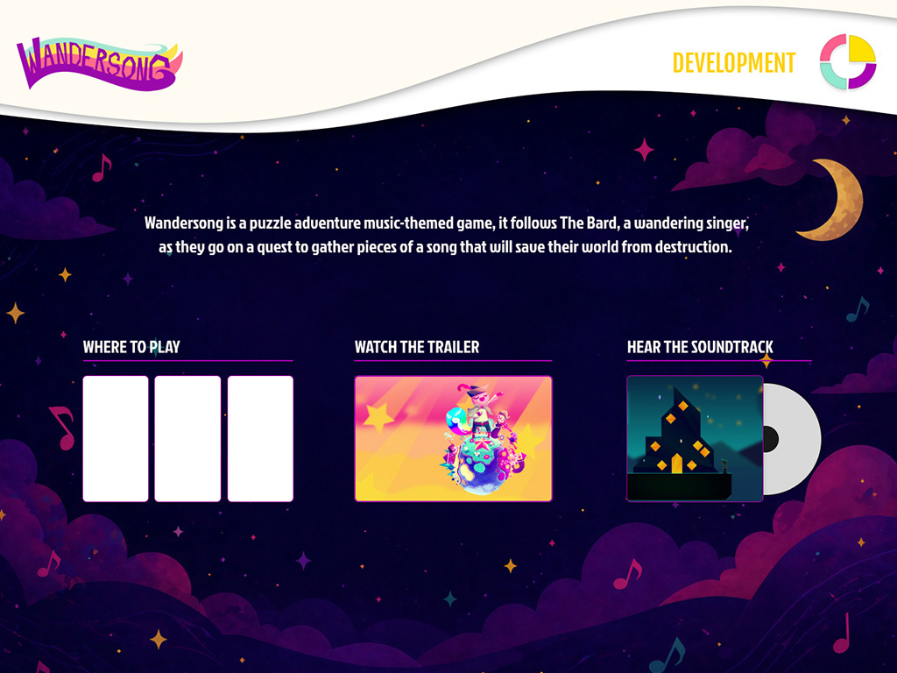
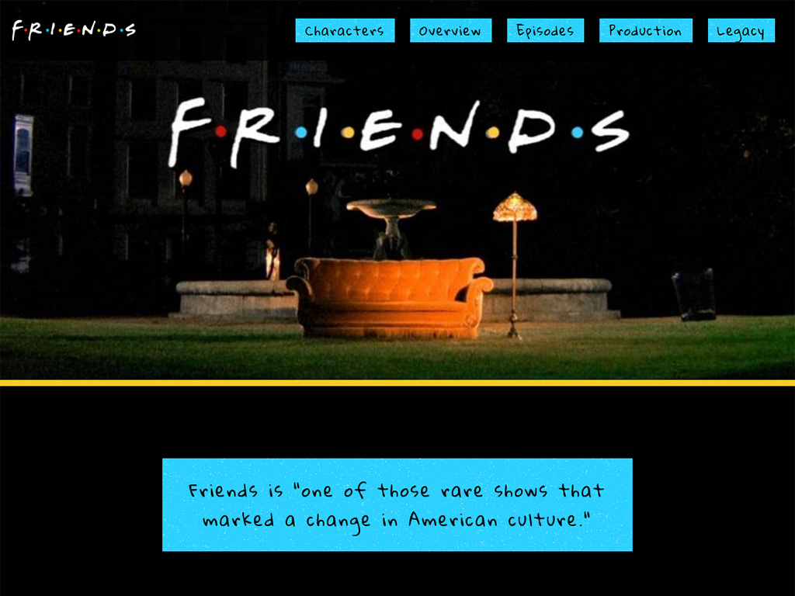

A webpage for one of my family recipes: fluffy sugar cookies! My goal for this was to make it as clean and simple as possible, using light colors to create a friendly mood.

A website for the videogame Wandersong. Unfortunately, my designer for this project fell off the face of the earth. The idea for this project was to be fun and inviting, with a blocky paper-cut feel.

A website for the popular TV show Friends. The creative direction was "90s but with modern elements," which lead to bold solid colors with a clean modern typeface.